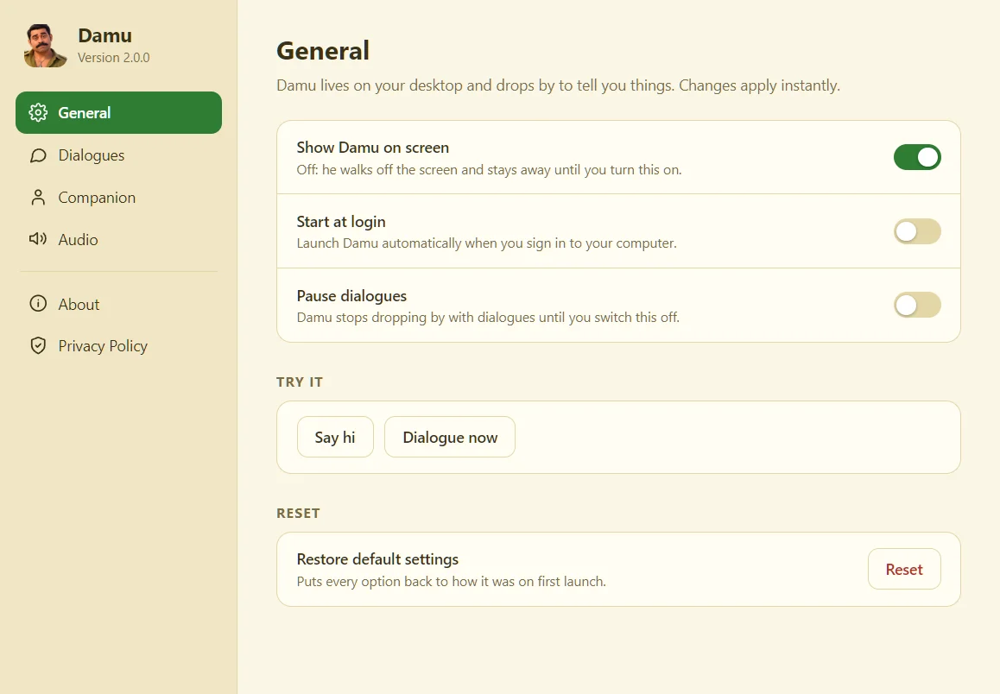
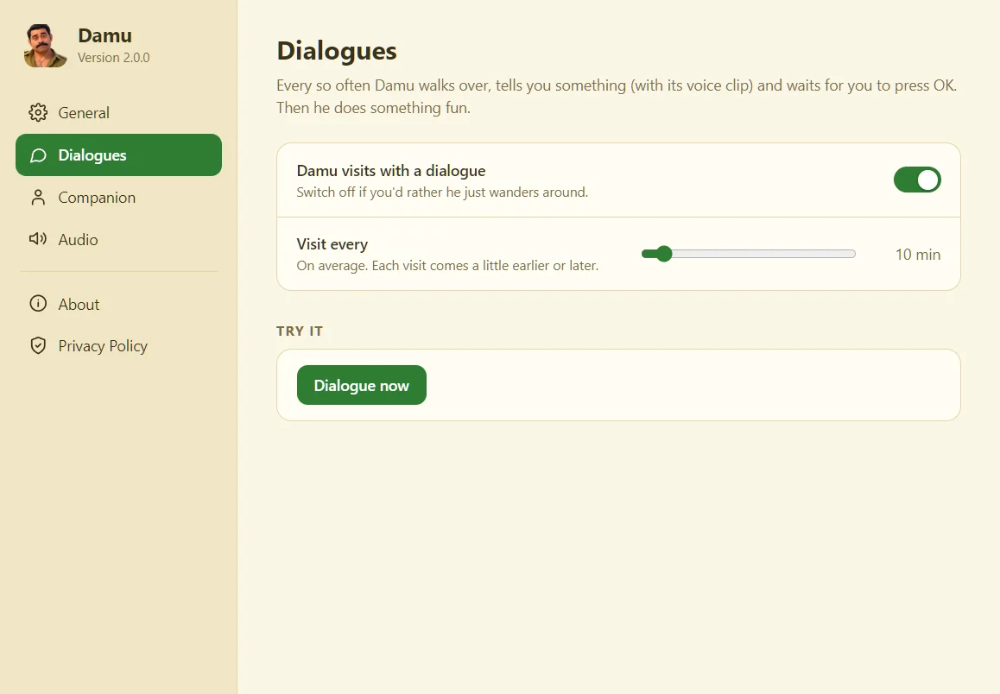
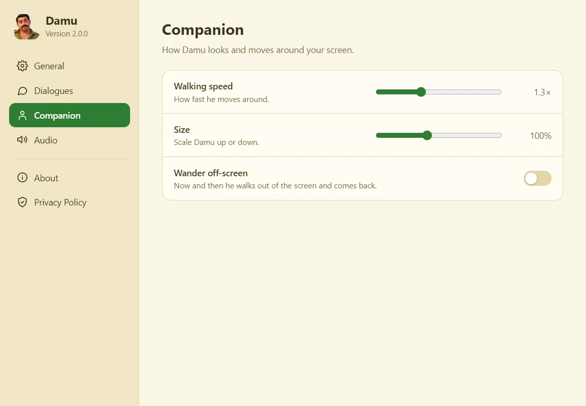
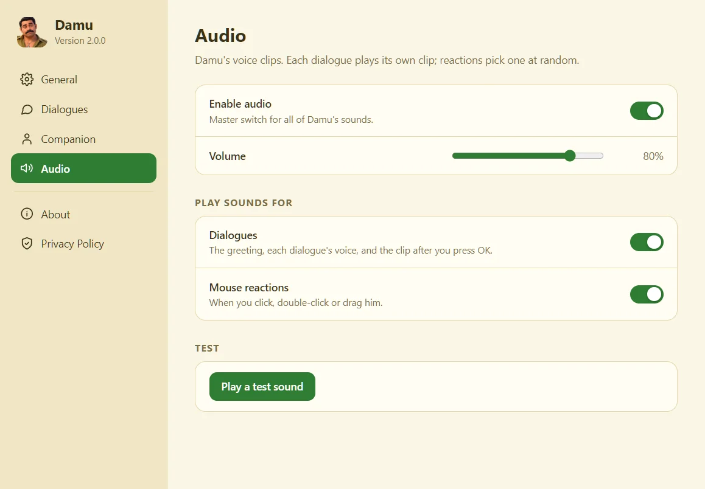

Dialogues with a voice
Damu comes to you with a speech bubble and a matching voice clip, then waits for you to press OK. You write the text and bring the audio, in any language.
Free · Open source · Windows & macOS
Every so often Damu strolls onto your screen, tells you something in his own voice, and waits for you to say OK. Then he cheers or dashes off. Click him, drag him, double-click him: he has an opinion about all of it.
0 downloads so far
ഞാൻ ദശമൂലം ദാമു.. എന്നെ വിശ്വസിക്കാം..
Click Damu
What he does
Damu comes to you with a speech bubble and a matching voice clip, then waits for you to press OK. You write the text and bring the audio, in any language.
Say OK and he cheers or runs across your screen.
Click, double-click, drag, drop: each one gets its own voice line.
Visit frequency, walking speed, size, volume, off-screen wandering. All in one Settings window.
No accounts, no telemetry, no network. Everything stays on your computer.
A tray icon on Windows, a menu-bar icon on macOS, and Damu never blocks your work: clicks pass straight through everywhere except on him.
How it works
Download Damu, run the installer and he walks right in.
Every few minutes, you choose how often, he shows a dialogue and plays its voice.
Another clip plays and he does a little move. Then he carries on with his day.
See it




Get Damu
Fetching the latest version…
Windows 10 or 11, 64-bit
The installer isn't code-signed yet, so SmartScreen may say "Windows protected your PC". Click More info, then Run anyway.
macOS 10.15 or newer · Apple Silicon & Intel
The app isn't signed with an Apple certificate yet. Drag Damu to Applications, then right-click it and choose Open (once). If macOS says it's "damaged", run xattr -dr com.apple.quarantine /Applications/Damu.app in Terminal.
The macOS build is new, so please tell us if anything misbehaves. All versions are on the releases page.
Questions
Yes, completely. It's open source under the MIT License. If you enjoy him, you can buy me a coffee.
No. There are no accounts, no analytics and no network connections. The only thing saved is your preferences, in a small file on your computer.
No. Damu floats above your windows, but clicks pass straight through everywhere except on Damu himself. You can switch him off in Settings, and he walks off the screen.
Yes. All of Damu's text and audio live in one file, assets/content.json. Add your lines and clips (.wav or .mp3), and the speech bubble supports Malayalam and other scripts. See the guide on GitHub.
Issues, ideas, translations and pull requests are welcome. Start with the contributing guide.
He's free and always will be. A coffee helps me keep making him better.